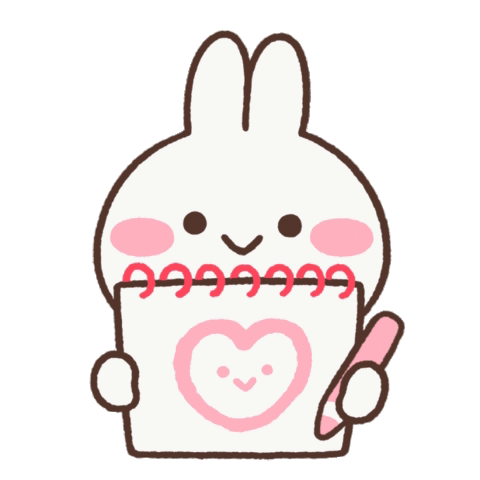
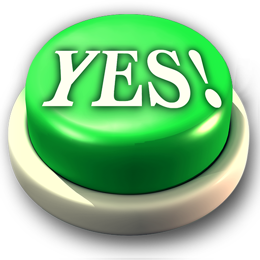
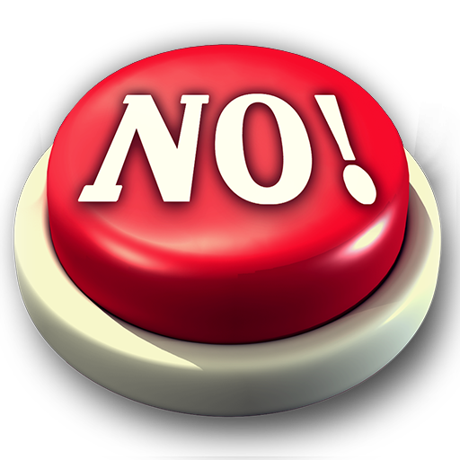

Will you be my Valentine tomorrow?


Here's our Valentine's Day plan for tomorrow, baby! 💖
From 11am to 12pm: I'll come to your place. We can either watch movies or walk around the city center until 1:30pm. Don't eat anything before that! 😉
From 1:30pm to 3:15pm: We're going to have lunch at MOSCO. It's a great buffet as I mention all the time, so we're going to enjoy it a lot! ❤️
From 3:15pm to 6pm: We'll probably be very full after the lunch. So, we can take a bus to either CS Lewis Square, Parliament Buildings, or Ormeau Park. The weather will be nice, so you can choose where to go. We could also go ice skating at Dundonald International Ice Bowl, but I'm not sure about our clothes for tomorrow. If it's not comfy, we can do it another time.
From 6pm onwards: We might be tired, so let's go back, make sushi and おにぎり together. Then, we can watch a movie at night, eat sushi, and drink cocktails together.
I look forward to tomorrow date with you baby. I love you a lot ❤️❤️❤️